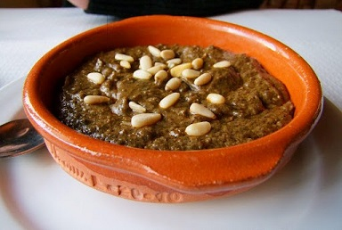
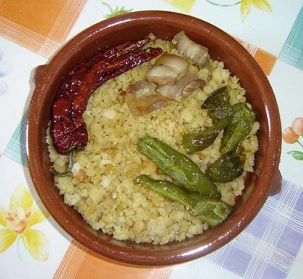
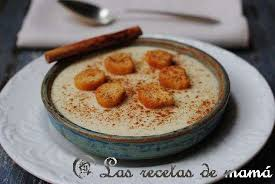

Ajo pringue
Ingredientes: Aceite, grasa de cerdo, hígado de cerdo, migas de pan, ajo, pimienta, canela, pimentón, cominos y sal.
Elaboración: Se tuesta con un poco de aceite la miga de pan y se le añade el agua hirviendo. Después se le añade el hígado picado y frito,
las especias y se va cociendo hasta que la grasa flote por encima.

Gachamiga
Ingredientes: Harina, aceite, patatas, sal y agua.
Elaboración: Se sofríen las patatas partidas finas y pequeñas. A parte se hace una mezcla blanda con agua, harina y sal; se echa en la sartén con las patatas, hasta que se vaya poniendo dorada y dura, luego se le da la vuelta y así hasta que este cocida.
Se puede y/o se debe, acompañar con unos chorizos, no politicos, en tal caso habría que tirarlas por el mal sabor de boca que dejan, morcillas, pimientos fritos, sardinas, pepino, uva, etc...

Galianos
Ingredientes: Ajo, tomate, conejo, tortas galianeras, aceite de oliva y sal.
Elaboración: Se cuece el conejo con sal. Se pone a calentar el aceite y se refrien los dientes de ajo primero, y el tomate rallado después.
Se añade un poco del caldo de cocer el conejo. Se deshuesa el conejo y se le añade la carne al refrito. Se trocean las tortas galianeras y se agregan, dando vueltas hasta que las tortas se cuezan y absorvan el caldo. Se sirve caliente.
Gachas dulces
Ingredientes: Harina, leche, azúcar, pan, aceite de oliva, canela, matalauva y corteza de naranja
Elaboración: Se refrí la harina con el azúcar y la matalauva hasta ponerse un poco rubia. Se le va echando la leche hasta que se queden ni duras ni blandas. Se ponen en una fuente y se les colocan por encima unos cuadrados de pan frito y se las adorna con canela y corteza de naranja. Se sirven frías.
